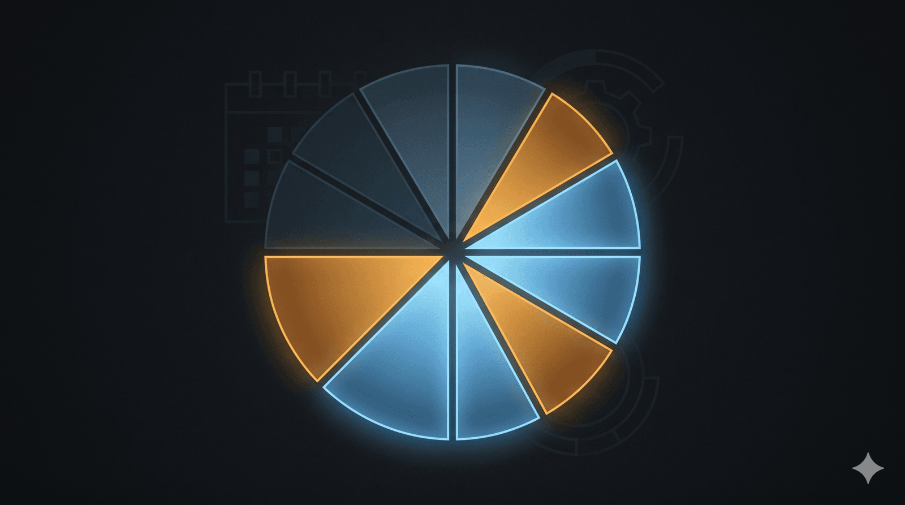

Ba mươi mẹo time-boxing từ một người dùng Threads
Làm sao người ta có thể đi làm full-time 8 tiếng, đi tập thể dục, nấu cơm, làm luận văn, chạy blog idol, dịch fic gay, yêu đương và vẫn ngủ đủ ạ?
-
Chìa khóa là ‘Time-boxing’. Mình chia lịch rõ ràng: 8h-17h cho công ty, 17h30-18h30 gym, 19h-20h nấu ăn & ăn, 20h-22h cho đam mê/luận văn. Đúng giờ là chuyển việc, không dây dưa.
-
Mình áp dụng quy tắc 2 phút: Việc gì dưới 2 phút (rửa bát, dọn bàn, rep tin nhắn) làm ngay lập tức. Nhà cửa gọn gàng thì tâm trí mới minh mẫn làm việc khác được.
-
Đừng coi tập thể dục là gánh nặng. Coi đó là khoảng nghỉ giữa giờ đi làm và giờ làm luận văn. Tập xong máu lên não tốt hơn, viết lách nhanh hơn hẳn.
-
Kinh nghiệm của mình: Luôn sơ chế đồ ăn (Meal prep) vào cuối tuần. Trong tuần chỉ mất 15p nấu. Tiết kiệm được mỗi ngày ít nhất 1 tiếng đồng hồ.
-
Ngủ đủ là ưu tiên số 1. Ngủ ít thì hôm sau não hoạt động 50% công suất, làm gì cũng chậm, thành ra lại mất thời gian hơn. Thà ngủ 7 tiếng rồi làm việc tập trung 1 tiếng còn hơn thức đêm làm lờ đờ 3 tiếng.
-
Tận dụng ‘thời gian chết’ tối đa. Lúc đi xe bus/grab mình dịch fic hoặc đọc tài liệu luận văn trên điện thoại. 20p mỗi lượt đi về là có thêm 40p mỗi ngày.
-
Bớt lướt mạng xã hội vô định lại. Bạn cài giới hạn thời gian dùng app sẽ thấy mình dư ra cả đống thời gian để yêu đương và tập tành.
-
Học cách từ chối các cuộc nhậu không quan trọng. Sau 25 tuổi, thời gian quý hơn vàng, chỉ dành cho người xứng đáng và việc mình thích.
-
Làm blog hay dịch fic là cách mình xả stress sau giờ hành chính. Khi làm vì đam mê, não bộ tiết ra dopamine nên không thấy mệt, thậm chí còn thấy khỏe hơn là nằm không.
-
Mình dùng App Notion để quản lý mọi thứ từ deadline luận văn đến lịch post blog. Có hệ thống rồi thì cứ thế mà chạy, không mất công nhớ nhớ quên quên.
-
Công thức của mình: 8 tiếng làm việc, 8 tiếng ngủ, còn 8 tiếng tự do. Trong 8 tiếng đó trừ ăn uống tắm rửa vẫn còn 4-5 tiếng. Nếu tập trung cao độ, 5 tiếng là làm được cực nhiều việc.
-
Hãy yêu một người cũng bận rộn hoặc ủng hộ đam mê của mình. Cả hai cùng ngồi cafe, mỗi người làm việc riêng nhưng vẫn là ở bên nhau. Đó là cách yêu của người trưởng thành.
-
Đừng đợi có cảm hứng mới làm. Đúng 8h tối là ngồi vào bàn, dù chỉ viết được 1 dòng cũng phải ngồi. Kỷ luật sẽ đưa bạn đi xa hơn cảm hứng.
-
Mua các thiết bị gia dụng thông minh: Robot hút bụi, máy rửa bát, nồi chiên không dầu. Đầu tư để giải phóng sức lao động là đầu tư thông minh nhất.
-
Chấp nhận sự không hoàn hảo. Có những ngày chỉ tập được 15p, nấu món trứng chiên đơn giản. Miễn là không bỏ cuộc, sự nhất quán (consistency) là quan trọng nhất.
-
Nguyên tắc: Việc công ty kết thúc ở công ty. Không mang việc về nhà để dành trọn vẹn tâm trí cho cuộc sống riêng.
-
Mình hay viết sẵn các caption blog vào Note điện thoại bất cứ lúc nào nảy ra ý tưởng. Đến tối chỉ việc đăng, không mất thời gian ngồi nặn chữ.
-
Học cách làm việc đa nhiệm thông minh: Nghe podcast bài học khi đang nấu cơm hoặc chạy bộ. Vừa nạp kiến thức vừa hoàn thành việc nhà.
-
Độ tuổi 25-40 cần sự bền bỉ. Đừng cố gồng quá mức trong 1 tuần rồi bỏ cuộc. Hãy xây dựng một nhịp độ mà bạn có thể duy trì trong 10 năm.
-
Đặt mục tiêu nhỏ thôi. Thay vì dịch cả chương fic, hãy dịch 500 chữ mỗi ngày. Nhỏ nhưng đều sẽ tạo ra kết quả khổng lồ.
-
Tập thói quen dọn dẹp ngay sau khi làm xong. Nấu xong rửa luôn, dùng xong cất luôn. Không để dồn đống thành nỗi ám ảnh vào cuối ngày.
-
Mình cắt hẳn tivi và các tin tức drama. Tập trung vào thế giới nội tại và những mục tiêu cá nhân. Tự nhiên thấy 24h dài ra hẳn.
-
Dành 15p cuối ngày để lên kế hoạch cho ngày mai. Sáng ngủ dậy chỉ cần nhìn list và làm, không mất thời gian loay hoay xem hôm nay làm gì.
-
Hãy tìm bạn đồng hành. Có nhóm cùng chạy blog, cùng tập gym sẽ giúp bạn có động lực hơn những lúc muốn lười.
-
Sức khỏe tinh thần rất quan trọng. Nếu hôm nào quá mệt, mình cho phép mình nghỉ hết để ngủ. Lắng nghe cơ thể là chìa khóa của sự bền bỉ.
-
Biến các đầu việc thành thói quen. Khi nó đã thành thói quen (như đánh răng), bạn sẽ không tốn ‘ý chí’ để bắt đầu làm nó nữa.
-
Dùng tai nghe chống ồn. Khi cần tập trung làm luận văn hay dịch fic, mình bật nhạc không lời và tách biệt hoàn toàn với thế giới.
-
Mùa nào thức nấy. Giai đoạn nước rút luận văn thì tạm gác blog. Xong luận văn thì bù lại cho người yêu. Cân bằng là một quá trình linh hoạt.
-
Ăn uống lành mạnh. Ăn quá nhiều tinh bột/đường vào buổi trưa sẽ khiến bạn buồn ngủ và lờ đờ cả chiều, đánh mất thời gian vàng.
-
Cuối cùng, tất cả là do sự lựa chọn. Bạn chọn bận rộn có ý nghĩa thay vì nhàn rỗi trong hối tiếc. Tư duy đó sẽ giúp bạn làm được tất cả.
Góc nhìn thứ hai: quản lý năng lượng thay vì thời gian
NGHỊCH LÝ CỦA SỰ BẬN RỘN – LÀM SAO ĐỂ CÓ TẤT CẢ MÀ KHÔNG “KIỆT SỨC”?
Có bao giờ bạn nhìn những người xung quanh và tự hỏi: “Tại sao họ cũng có 24 giờ như mình, nhưng vẫn đi làm 8 tiếng, vẫn tập thể dục đều, nấu ăn ngon, làm luận văn, viết lách… mà vẫn ngủ đủ?”
Sự thật, họ không phải siêu nhân. Họ chỉ sở hữu một Hệ điều hành cá nhân tốt hơn. Ở độ tuổi 25-40,là dân văn phòng kỷ luật không còn là ép buộc bản thân, mà là thiết lập các rào chắn để bảo vệ năng lượng.
Dưới đây là 4 trụ cột có thể giúp bạn “ôm đồm” một cách khoa học:
Trụ cột 1: Quản lý năng lượng
- Quản lý Năng lượng thay vì Quản lý Thời gian
Thời gian là hữu hạn, nhưng năng lượng có thể tái tạo. Sai lầm của dân văn phòng là cố gắng giải quyết việc khó vào lúc tinh thần đã cạn kiệt.
Hãy chia công việc theo “tầng năng lượng”. Việc cần sự tập trung cao độ như làm luận văn? Hãy ưu tiên khung giờ vàng từ 4h-6h sáng. Những sở thích như viết lách hay dịch thuật? Hãy coi đó là cách nghỉ ngơi chủ động để giải tỏa căng thẳng sau giờ hành chính, thay vì lướt mạng vô định.
Trụ cột 2: Tự động hóa và gom nhóm
- Tự động hóa và “Kỹ thuật gom nhóm”
Những người thong dong nhất thường là những bậc thầy về quy trình.
Đừng đứng trước tủ lạnh mỗi ngày và hỏi “ăn gì?“. Hãy dành 3 tiếng chiều Chủ nhật để sơ chế cho cả tuần. Bạn vừa tiết kiệm được 7-10 tiếng nấu nướng, vừa đảm bảo sức khỏe.
Tranh thủ lúc đợi xe, đi thang máy để phản hồi tin nhắn hoặc lên dàn ý nhanh. Khi ngồi vào bàn, bạn chỉ việc “thực thi” thay vì mất thời gian để “nghĩ”.
Trụ cột 3: Kỷ luật của sự ưu tiên
- Kỷ luật của sự Ưu tiên
Bạn có thể làm tất cả mọi thứ, nhưng không phải trong cùng một lúc.
Sẽ có những tuần luận văn là ưu tiên số 1, hãy chấp nhận giảm cường độ tập luyện hoặc ra bài chậm lại. Kỷ luật thực sự là biết lúc nào cần “gồng” và lúc nào cần “buông” để tránh quá tải.
Học cách nói “Không” với những cuộc nhậu xã giao vô bổ và tin tức độc hại. Mỗi lần bạn nói “Có” với một điều không quan trọng, bạn đang nói “Không” với giấc ngủ hoặc đam mê của chính mình.
Trụ cột 4: Hệ thống hóa giấc ngủ
- Hệ thống hóa giấc ngủ và Phục hồi
Ngủ đủ 7-8 tiếng không phải là lười biếng, đó là bảo trì hệ thống.
Một bộ não thiếu ngủ sẽ mất 3 tiếng để giải quyết việc mà một bộ não tỉnh táo chỉ mất 1 tiếng. Nếu muốn “có tất cả”, bạn buộc phải ngủ đủ để duy trì hiệu suất đỉnh cao.
Kỷ luật không phải là giam cầm bản thân, mà là con đường tắt dẫn đến sự tự do. Đừng đợi “cảm hứng”, hãy xây dựng một Hệ thống để ngay cả khi mệt mỏi nhất, bạn vẫn tiến về phía trước.
Bạn chọn bận rộn trong hoang mang, hay bận rộn trong chủ động?
Hãy tối ưu hóa ngay hôm nay:
Trong danh sách việc cần làm, đâu là việc ngốn nhiều thời gian nhất nhưng mang giá trị thấp nhất? Hãy mạnh dạn cắt bỏ hoặc tự động hóa nó ngay bây giờ!
🔍 Phân tích bài viết
📌 Tóm tắt ý chính
Bài tổng hợp hai góc nhìn về quản lý thời gian: (1) 30 tips thực hành cụ thể từ một người dùng threads (@vita.minp) về time-boxing, quy tắc 2 phút, meal prep, giới hạn mạng xã hội; (2) framework 4 trụ cột của Trần Văn Truân — quản lý năng lượng thay vì thời gian, tự động hóa quy trình, kỷ luật ưu tiên, và hệ thống hóa giấc ngủ. Thông điệp cốt lõi: kỷ luật không phải giam cầm — đó là con đường tắt đến tự do.
🗺️ Mindmap
💡 Insight & Góc nhìn đa chiều
“Quản lý năng lượng thay vì thời gian” là điểm đáng chú ý nhất — hầu hết sách về productivity vẫn đang frame sai vấn đề. Bạn có thể có 24h nhưng nếu 50% số đó não hoạt động 30%, output thực tế chỉ bằng người ngủ đủ 7h. Làm tốt trong 5 tiếng > làm lờ đờ trong 10 tiếng — đây là logic ngược với văn hóa “hustle”.
Mẹo “yêu người cũng bận rộn và ủng hộ đam mê” (tip 12) thực ra là advice về partner selection ẩn trong bài productivity — khá thực tế cho độ tuổi 25-35.
⚖️ Phản biện
- Time-boxing hoạt động tốt cho công việc rời rạc, không tốt cho công việc sáng tạo: Thiết kế, viết lách, debug code phức tạp không thể “bật tắt” theo đúng giờ. Ép chuyển đúng 22:00 có thể phá vỡ trạng thái flow.
- 30 tips quá nhiều để nhớ và thực hiện cùng lúc: Nghiên cứu về habit formation (BJ Fogg) chỉ ra rằng thay đổi nhiều thói quen cùng lúc gần như luôn thất bại. Cần pick 2-3 tips, làm thành automatic trước.
- “Đặt mục tiêu nhỏ” (tip 20) mâu thuẫn với “kỷ luật là đến ngồi vào bàn dù chỉ viết 1 dòng” (tip 13): Một cái focus vào output (500 từ), cái kia focus vào process (ngồi vào bàn). Cả hai đúng nhưng cho người khác nhau — bài không phân biệt.
❓ Câu hỏi mở
- Time-boxing hiệu quả hơn hay kém hơn với người làm shift (công nhân, y tá) so với dân văn phòng?
- Khi AI ngày càng làm được nhiều việc lặp lại, “8h tự do” sẽ tăng lên — nhưng con người có sẵn sàng dùng nó cho phát triển bản thân không, hay sẽ lại đổ vào giải trí?
- Ranh giới giữa “kỷ luật lành mạnh” và “nghiện năng suất” (productivity addiction) ở đâu?
🇻🇳 Liên hệ Việt Nam
Văn hóa “chịu thương chịu khó” ở VN thường glorify làm việc nhiều giờ hơn là làm việc hiệu quả. Khái niệm quản lý năng lượng còn rất mới — hầu hết nhà quản lý VN vẫn đánh giá nhân viên qua thời gian có mặt, không phải output. Nhưng thế hệ trẻ (25-35) đang bắt đầu push back, đặc biệt sau COVID khi WFH cho thấy năng suất không tỉ lệ với giờ làm.
Meal prep cuối tuần đặc biệt phù hợp cho người sống một mình tại Nhật hoặc xa nhà — tiết kiệm không chỉ thời gian mà cả tiền và sức khỏe.
📖 Giải thích thuật ngữ
- Time-boxing: Chia thời gian thành hộp cố định cho từng loại việc — không cho việc này chảy sang thời gian của việc kia
- Kỹ thuật gom nhóm (Batching): Gộp các việc cùng loại lại làm một lần — như trả lời email hết trong 30 phút thay vì check liên tục cả ngày
- Flow state: Trạng thái tập trung sâu khi não vào guồng — khó tạo ra và dễ bị phá vỡ